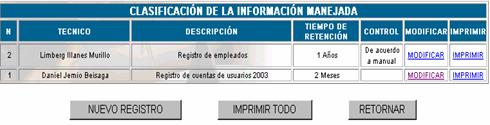
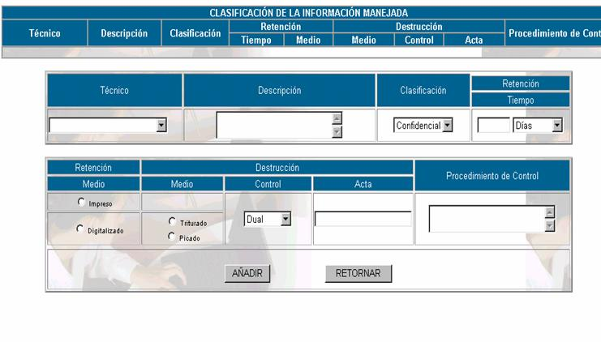

CLASIFICACIÓN DE LA INFORMACIÓN MANEJADA
La información que maneja el Jefe de la Unidad de Sistemas es altamente sensible, por eso debe estar en custodia y debidamente clasificada, para este propósito es que se realiza la clasificación de la información, que le presenta la siguiente pantalla principal.

Donde :
N; se refiere al número de clasificación de información asignada automáticamente por el sistema.
Técnico; se refiere al nombre del custodio de la información
Tiempo de retención; se refiere al número de días, semanas, meses o años especificados al momento de recibir la información para custodiarla.
Control ; se refiere a la descripción del procedimiento de control que se llevará para la custodia de la información
Nuevo registro; presenta la siguiente pantalla, en la cual se deben llenar los campos correspondientes.

Técnico;
se registra el nombre del técnico custodio encargado de clasificar la información que llega.Descripción;
se registra una descripción completa de la información que llega para ser clasificada.Clasificación;
el custodio debe clasificar la información que llega en Confidencial, Reservada, Interna o Pública., de acuerdo con la PSI.Tiempo;
es el tiempo de retención que permanece la información en custodio, esta puede ser expresada en días, semanas o mesesRetención Medio;
se especifica el medio en el cual se retendrá la información, este puede ser impreso o digitalizado.Destrucción Medio;
se especifica el medio de destrucción de la información custodiada esto dependerá del medio utilizado para la retención, si es físico podrá ser picado, si es digitalizado magnético, podrá ser trituradoControl;
este campo se registrará como dual si es necesario 2 personas para la destrucción de la información, si basta una sola persona se marcará en PersonalActa
; este campo se llena si es necesario la elaboración de un acta de destrucción y se deberá hacer referencia al documento elaborado.Procedimiento de control
; es este campo se llenará los aspectos correspondiente al control independiente de la información custodiada.Modificar; para realizar los cambios pertinentes sobre la información de clasificación de la información haga click en
MODIFICAR, que le mostrará la pantalla de llenado de datos, con los datos establecidos en el momento del registro, usted puede cambiar cualquiera de ellos y hacer click en GUARDAR MODIFICACIONES.Imprimir; haciendo click en
IMPRIMIRse obtiene un reporte de toda la información de la clasificación de la información.